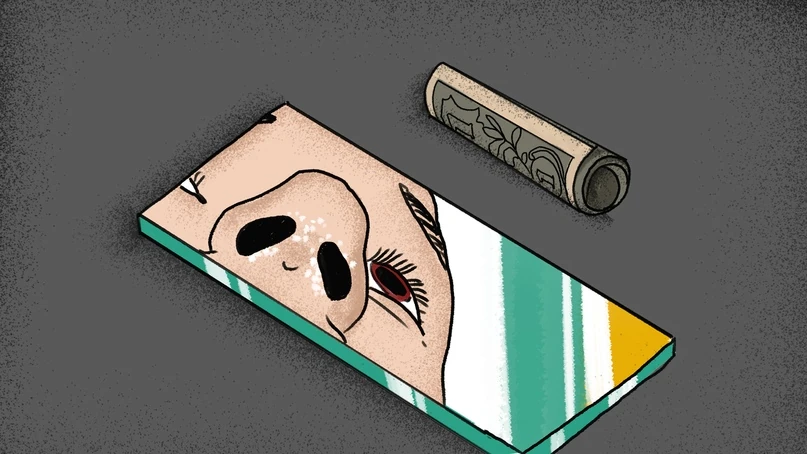

Mr.Nobody возвращается в «родную» колонию и потихоньку привыкает к тамошнему новому «строю»

Было приятно идти по железнодорожному гравию. Обычно конвой запрещает смотреть по сторонам, но кроме камешков под ногами мне удалось разглядеть окружающий пейзаж — на ум совершенно некстати пришло слово «губерния», а за ним неизбежным ассоциативным рядом последовал «уезд». Здания на вокзале были образцом дореволюционной архитектуры: бледно-желтые или бирюзовые, с широкими оконными рамами белого цвета. Все тонуло в густом утреннем тумане, напоминая скорее чье-то медленно стирающееся воспоминание о вокзале, нежели сам вокзал — настолько он был фрагментарным.
Нас загрузили в автозак. Настрой у осужденных был, судя по всему, подавленный — полтора часа молчания, дорожного грохота и голов, покачивающихся из стороны в сторону. Этап встречали не только рядовые сотрудники колонии, но и какие-то люди в камуфляже и масках. Огромные, молчаливые, своим немым присутствием они были похожи на Гору, охраняющего Серсею в «Игре престолов». Нас обыскали и отвели в карантин — такой же, как и несколько лет назад, что внушало какой-то экзистенциальный ужас: казалось, эти помещения и через 100 лет будут неизменными. Осужденных, еще не бывавших в этой колонии, среди нас не было — некоторые, как и я, вернулись после суда, другие — из больниц и психушек. Так что надолго в карантине мы не задержались — через несколько дней нас «подняли» в лагерь на те же отряды, на которых мы некогда жили.
Все изменилось в корне. По бараку бродили люди со смартфонами; шконки были завешены со всех сторон, жилые секции практически заволокло сигаретным дымом. Громко играла музыка — уже не «Каспийский груз», а шансон. Что, в принципе, не менее ужасно. Дима и Денис встретили меня накрытым столом с внушительным количеством сладкого. Я жевал как безумный и слушал рассказы о том, что произошло в зоне за время моего отсутствия.
— И что теперь? Можно все? — спросил я с какой-то детской наивностью.
— Да, — ответил Дима. — Только сходи к смотрящему за лагерем.
Вечером того же дня я отправился в «Кремль» — так зеки называют барак, в котором живет смотрящий. Картина во всех помещениях была такой же, как и у нас в здании, — зеки свободно ходят с телефонами в руках, играют в карты и смотрят клипы с полуголыми девушками. Я зашел в каптерку. За непомерно большим столом сидели три человека.
— Привет, — говорю. — Я Mr.Nobody, вернулся с суда. Сегодня подняли.
Пожал всем руки, сел за стол.
— Думаю, ты уже в курсе, что у нас тут произошло, — сказал один из них. — Меня зовут Андрей, я загружен за лагерь. Зона теперь на черном ходу. Короче, освоишься. Будут какие-то вопросы, ситуации — заходи, пообщаемся.
Я кивнул. Что тут сказать.
— Мы за тебя пробили, — продолжал он, — замечен в неправильных поступках ты не был, с блядями не водился (фраза прозвучала двусмысленно, но речь шла о спортсменах). Вернешься в барак, я наберу пацанам — тебя положат на нормальное место, — добавил он.
Я снова кивнул.
— Дудку куришь? — спросил второй.
Ох ё, только не это.
— Нет, от души, пацаны, я не любитель, — отвечаю я.
— Может, фена?
Сначала я отказывался. Никогда в жизни не пробовал ничего подобного. Стоит отметить, что мое мировоззрение было вывихнуто неправдоподобием: недостоверными фильмами, книгами, историями других людей. Казалось, что существует единая формула судьбы человека, употребившего наркотик, — сегодня ты пробуешь кокаин, а завтра сосешь за крек на стоянке.
Через минуту в комнате уже был шнырь смотрящего.
— Артем, сделай нам, пожалуйста, пять кружек чая с сахаром. И принеси зеркало, — сказал Андрей.
Такая манера общения со шнырем меня удивила. Я привык к тому, что их бьют ни за что, а тут еще и слово «пожалуйста», которое в тюрьме вообще редко услышишь.

Я не спал двое суток. Одна из моих тетрадей была исписана какой-то чушью, казавшейся гениальной в момент написания. Меня предупреждали, что после того как наркотик отпустит и я просплюсь, буду ощущать ужасную апатию, депрессию и отсутствие желания жить.
— Это мое обычное состояние, — констатировал я.
А вот о проблемах с носом меня не предупреждали. Он то был забит, то безостановочно тек — я натер его так сильно, что кожа слезала слоями. В дальнейшем я позволял себе употреблять этот наркотик раз в три-четыре месяца, хотя возможность делать это выдавалась гораздо чаще.
Если говорить о зависимостях, то самой страшной была, безусловно, героиновая. Дважды в день наркоманы, закинувшие деньги в героиновую «коляску» (так называют коллективный сбор средств на что-либо), толпятся в одном из коридоров второго барака. В ожидании, когда «коляска доедет». Затем их зовут по очереди, отдавая «чеки». Разумеется, героина всегда меньше, чем должно быть.
— Опять наебали. Я бы за такую сумму мог на воле взять столько, что и передознуться можно… — говорил чуть ли не каждый из покупателей. Но все равно прибегал на следующий день.
Тюремная жизнь бедна и однообразна, при каком «строе» ты бы не жил. Утро начинается с почти синхронного коллективного вставания со шконок. Все идут умываться, и мыло постукивает в мыльницах, выбивая какой-то племенной ритм. Дальше — проверка, на которой осужденные выстраиваются рядами, а дежурный мент пристально всех осматривает (хорошо ли побриты, подстрижены), словно мы стоим на рынке невольников. Меню завтраков, обедов и ужинов из-за их скудости трудно не заучить наизусть. Между приемами пищи (если так вообще можно выразиться) — чтение, сон и — для некоторых — интернет.
Вскоре у меня появился свой телефон, и целыми днями я поглощал фильмы, начиная с немого кино, один за одним. Читал книги, поддерживая пиратство (бумажные просто заканчивались). Но, как это часто бывает, чем глубже мы погружаемся во что-то, тем острее чувствуем свое одиночество. Так случилось и со мной.
Мое восхищение чем-либо искало выхода — и не могло его найти. Вряд ли на зоне нашелся бы человек, способный разделить со мной эти эмоции — без осуждения, комментариев и упражнений в рецензировании. Мне хватило бы одного присутствия человека, который чувствует то же и так же. Но его не было.